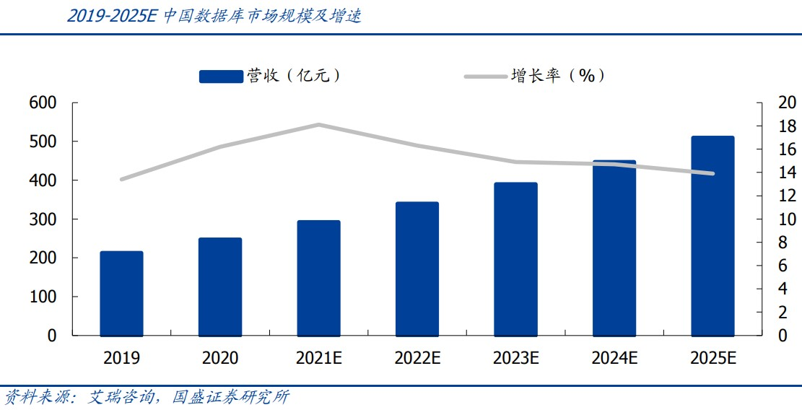

信创潮下国内数据库厂商多点开花 分布式或贡献未来市场新增量
数字经济时代，全球数据量激增，各行各业对数据库的需求持续增长。
作为三大基础软件之一，数据库是计算机行业的基础核心软件，所有应用软件的运行和数据处理都要与其进行数据交互。
我国数据库市场长期为海外巨头垄断，甲骨文、微软、SAP、IBM四家海外代表厂商的市场份额占比近7成。随着国内信创改革推进，国内数据库行业迎来多方利好，2020年二季度开始国产数据库中标量持续攀升，2021年同比增长140%，中标金额同比增长166%。
艾瑞咨询预计，2025年中国数据库市场行业规模将超过500亿元。而基于历史和行业的发展经验，业内预计国产数据库在各细分领域都有望走出一到两家行业龙头。
分布式数据库或贡献新增量
近年，随着人工智能、AIOT、云计算等技术的发展，全球数据量大幅扩展。
统计显示，2020年全球数据量约50.5ZB，三年复合增速(CAGR)约为25%。IDC预计，全球近90%的数据将在这几年内产生，2025年全球数据量将比2016年的16.1ZB增加十倍，达到163ZB。
其中，中国的数据产生量约占全球数据产生量的23%，美国占比约为21%，EMEA(欧洲、中东、非洲)、APJxC(日本和亚太)和全球其他地区占比分别约为30%、18%、 8%。
数据量的激增持续拉动各行业数据库需求。根据艾瑞咨询统计，2020年中国数据库市场总规模达到247.1亿元，较2019年增长16.2%，预计2020-2025年CAGR将达到15.6%。

国产数据库厂商的技术路线，按照数据库存储数据方式的不同分为关系型和非关系型两条路线，按照不同的系统架构分为集中式和分布式两类，按照数据库应用类型的不同还可以分为OLTP、OLAP、HTAP。
由于传统的关系型数据库在高并发、分析等方面存在一定劣势，分布式数据库应运而生，华创证券认为，分布式数据库能够较好地满足大数据分析的需求，或贡献数据库市场新的增量。
“在分析型数据库领域，有一些先进的技术架构，比如分布式数据库。国外这个领域开源的东西比较多，很多国内厂商加入了国外的开源生态，这一领域其实有点像百花齐放，具备弯道超车的机会。”某券商软件行业分析师对第一财经表示。
国产数据库亟需应用场景历练
国内数据库目前有Oracle和Postgresql(PG)两大热门路线，PG数据库走开源社区路线，且有华为高斯开源的促进，起点高、发展快，生态厂商多，但国产数据库在RAC(Oracle Real Application Cluster，真正应用集群)等场景上与海外数据库性能差距仍然较大，客户出于业务系统稳定性和安全性的考虑，目前很少有行业客户核心业务系统使用国产数据库的案例。
像传统OLTP这种交易型数据库，国产数据库与海外产品技术方面差距较大，短期间内很难实现国产替代。 缺乏应用场景是目前国产数据库面临的主要困难之一。目前大部分国产数据库得不到核心业务场景的应用机会。替代一套数据库系统的成本很高，尤其是涉及核心业务场景，但场景的应用和技术的打磨是相辅相成的。
信创改革大潮下，党政机关全部采用国产数据库，2020年在金融行业先行试点，也给国产数据库提供了更多应用场景。